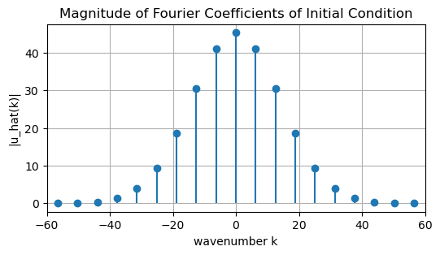

15Week 15 – Spectral (Fourier) Methods for Linear Advection
Course: Numerical Analysis Topic: Fourier/Spectral Methods on Periodic Domains
15.1 Learning Objectives
By the end of this notebook, students should be able to:
Represent a function on a periodic domain using a discrete Fourier transform (DFT).
Use the FFT to compute Fourier coefficients and reconstruct the function.
Implement a spectral time-stepping method for the linear advection equation.
Compare spectral and finite-volume/finite-difference solutions in terms of accuracy and dispersion.
Observe aliasing and resolution effects for high-frequency initial data.
15.2 1. Linear Advection on a Periodic Domain
We consider again \[u_t + c\,u_x = 0\] on a periodic domain \(x \in [0,L]\).
The exact solution is a translation: \[u(x,t) = u_0(x - ct).\]
Spectral methods take advantage of periodicity by expanding \(u\) in a Fourier series.
15.3 2. Fourier Series and Discrete Fourier Transform
On a periodic domain with period \(L\), a sufficiently smooth function \(u(x,t)\) can be expanded as \[
u(x,t) = \sum_{k=-\infty}^{\infty} \hat u_k(t) e^{i k \kappa x},
\quad \kappa = \frac{2\pi}{L}.
\]
In a discrete setting, with \(N\) grid points \(x_j = j\,\Delta x\) and \(\Delta x = L/N\), we approximate this with a finite sum over wavenumbers \(k\): \[u_j \approx \sum_k \hat u_k e^{i k \kappa x_j}.\]
The discrete Fourier transform (DFT) (implemented in NumPy by np.fft.fft) maps the physical values \(u_j\) to complex Fourier coefficients \(\hat u_k\).
import numpy as npimport matplotlib.pyplot as pltL =1.0N =256# use a power of 2 for efficient FFTdx = L / Nx = np.linspace(0, L, N, endpoint=False)c =1.0def initial_condition(x):return np.exp(-100.0* (x -0.3)**2)u0 = initial_condition(x)plt.figure(figsize=(6, 3))plt.plot(x, u0)plt.xlabel("x")plt.ylabel("u")plt.title("Initial Condition (Gaussian, Periodic)")plt.grid(True)plt.show()
15.3.1 2.1. Computing the DFT and Inverse DFT
NumPy provides:
np.fft.fft(u) – computes the DFT \(\hat u_k\) from physical values \(u_j\).
np.fft.ifft(uhat) – computes the inverse DFT from \(\hat u_k\) back to physical space.
The DFT indices correspond to wavenumbers \(k\), which we can obtain using np.fft.fftfreq.
uhat0 = np.fft.fft(u0)k_freq = np.fft.fftfreq(N, d=dx) # cycles per unit lengthk =2* np.pi * k_freq # angular wavenumbersplt.figure(figsize=(6, 3))markerline, stemlines, baseline = plt.stem(k, np.abs(uhat0), basefmt=" ")plt.xlim(-60, 60)plt.xlabel("wavenumber k")plt.ylabel("|u_hat(k)|")plt.title("Magnitude of Fourier Coefficients of Initial Condition")plt.grid(True)plt.show()

Most of the energy is concentrated at low wavenumbers because the Gaussian is smooth.
15.4 3. Spectral Solution of Linear Advection
Exercise: Substitute the Fourier series into the PDE, and solve the resulting ODE.
Solution:
15.4.1 3.1. Spectral Time Stepping
Given \(u_j^0\):
Compute \(\hat u_k(0) = \mathcal{F}[u_j^0]\) using FFT.
For each time step of size \(\Delta t\), update \[\hat u_k^{n+1} = \hat u_k^{n} \exp(-i c k \Delta t).\]
Transform back to physical space using inverse FFT to visualize \(u_j^n\).
This method is spectrally accurate in space (for smooth periodic solutions) and exact in time for the linear advection PDE, assuming no aliasing issues.
def spectral_advection(u0, c, dx, dt, nt):''' Spectral solution of u_t + c u_x = 0 on a periodic domain. Uses exact evolution in Fourier space. ''' N = ... x = ... u = ... history = ...# Precompute wavenumbers k_freq = np.fft.fftfreq(N, d=dx) k =2* np.pi * k_freq# Initial Fourier coefficients uhat = ...# Precompute phase factor for one time step phase = ...for n inrange(nt): uhat = ... u = ... history.append(u.copy())return np.array(history)Tfinal =0.5lambda_target =0.8dt = lambda_target * dx / cnt =int(Tfinal / dt)history_spectral = spectral_advection(u0, c, dx, dt, nt)plt.figure(figsize=(6, 3))plt.plot(x, u0, label="t=0")plt.plot(x, history_spectral[nt//2], label=f"t={dt*(nt//2):.3f}")plt.plot(x, history_spectral[-1], label=f"t={dt*nt:.3f}")plt.xlabel("x")plt.ylabel("u")plt.title("Spectral Solution of Linear Advection")plt.legend()plt.grid(True)plt.show()
15.4.2 Comparison with Exact Solution
Recall the exact solution is a translation: \[u_{\text{exact}}(x,t) = u_0(x - c t).\]
We can construct this and compare it with the spectral solution numerically.
def exact_solution(x, t, c):# shift x by ct with periodic wrap-aroundreturn initial_condition((x - c * t) % L)u_exact = exact_solution(x, Tfinal, c)u_spec_final = history_spectral[-1]plt.figure(figsize=(6, 3))plt.plot(x, u_exact, label="Exact at T")plt.plot(x, u_spec_final, '--', label="Spectral at T")plt.xlabel("x")plt.ylabel("u")plt.title("Spectral vs Exact Solution")plt.legend()plt.grid(True)plt.show()error_l2 = np.sqrt(np.mean((u_spec_final - u_exact)**2))print(f"L2 error between spectral and exact solution: {error_l2:.2e}")
For this smooth initial condition and reasonable resolution, the spectral method should be extremely accurate.
15.5 4. Try It 1 – Compare Spectral and Finite Volume Solutions
We now compare the spectral method with the finite volume upwind method from Week 14.
15.5.1 Task
Implement or reuse the FV upwind scheme for the same grid and time step.
Compute the FV upwind solution at the same final time.
Plot:
Exact solution
Spectral solution
FV upwind solution
Compare:
Phase accuracy (location of the bump)
Amplitude and shape (numerical diffusion)
# TRY IT 1: Compare spectral and FV upwind solutionsdef fv_upwind(u0, c, dx, dt, nt): ...# TODO:# 1. Compute history_fv = fv_upwind(u0, c, dx, dt, nt).# 2. At final time, plot u_exact, spectral solution, and FV solution on the same figure.# 3. Comment on which method is more accurate and how the FV solution differs.
15.6 5. Try It 2 – High-Frequency Initial Data and Aliasing
Spectral methods rely on resolving the relevant frequencies. If the initial condition contains frequencies near or beyond the Nyquist limit, we see aliasing.
15.6.1 Task
Define a high-frequency initial condition, for example \[u_0(x) = \sin(20\pi x).\]
Repeat the spectral advection experiment to final time \(T\).
Try different values of \(N\) (for example 64, 128, 256) and compare:
How well do we resolve the wave?
Do you see aliasing or strange patterns?
# TRY IT 2: High-frequency initial conditiondef high_freq_ic(x):return np.sin(20.0* np.pi * x)# TODO:# 1. Set u0_hf = high_freq_ic(x).# 2. Run spectral_advection with this initial condition.# 3. Plot the solution and the exact translated wave.# 4. Experiment with changing N and observe what happens.
15.7 6. Summary: FD / FV / Spectral Methods for Linear Advection
We have now seen three perspectives on numerically solving the linear advection equation on a periodic domain:
Method
Viewpoint
Spatial accuracy (for smooth data)
Conservation
Complexity
FTBS (FD)
Local derivative
First order
Approximate
Simple
FV Upwind
Flux balance
First order
Conservative
Moderate
Spectral
Global expansion
Spectral (very high)
Conservative (for linear advection)
Higher (FFT)
Key takeaways:
Finite difference and finite volume methods are local and easy to generalize to complex geometries and non-linear PDEs.
Spectral methods exploit global smoothness and periodicity to achieve very high accuracy but require more structure (for example periodic domains) and care with aliasing.
For smooth, periodic problems like linear advection, spectral methods can be extremely efficient and accurate.
15.8 7. Reflection Questions
In what settings would you prefer a finite volume method over a spectral method, and why?
How does the concept of conservation appear in each method?
How would you expect these methods to behave for non-smooth initial data (for example discontinuities)?